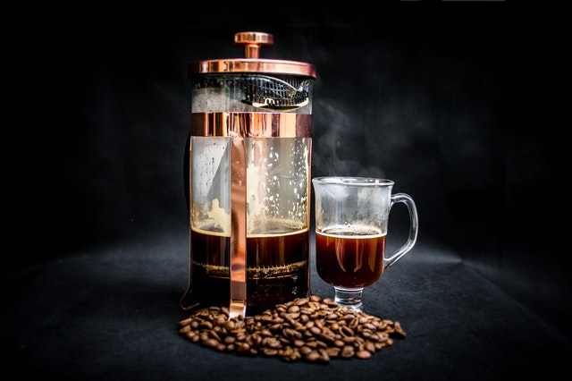
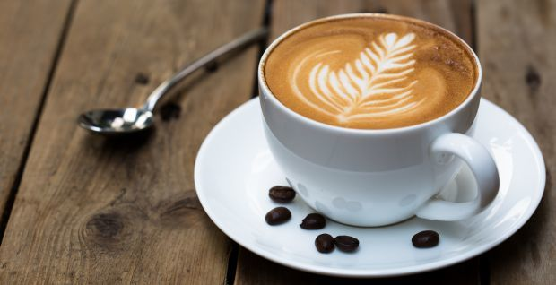

Filtre kahve, kahve çekirdeklerinin sıcak suyla demlenmesiyle hazırlanan bir kahve türüdür. Genellikle kahve filtresi veya kahve makinesi kullanılarak yapılır. Filtre kahve, yoğun ve aromatik bir tat sunar ve dünya genelinde popüler bir içecektir.
Kırmızı fincan, kahve severler için şık ve modern bir tasarıma sahip özel bir fincandır. Kalitesi ve ergonomik tasarımı ile kahve keyfinizi artırır.
Sizin Seçtikleriniz
En Klasiklerimiz

Basında Biz